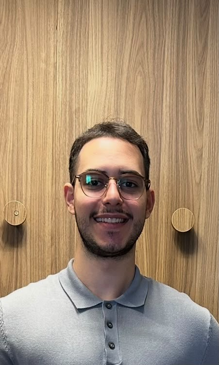

Carlos Henrique
Moisés Maioli
Psicólogo Esportivo
CRP 06/220230
Sou psicólogo clínico, pós-graduado em psicologia do esporte, psicologia organizacional e de gestão de pessoas; e atualmente curso uma pós em psicologia hospitalar na Santa Casa de São Paulo. Tive experiência em diversas áreas, como atendimento de atleta, individual e em grupo, atendimento hospitalar infanto juvenil; e clínico com todas as faixas etárias. Faço atendimentos presenciais em São Paulo capital no bairro Sumaré e on-line.